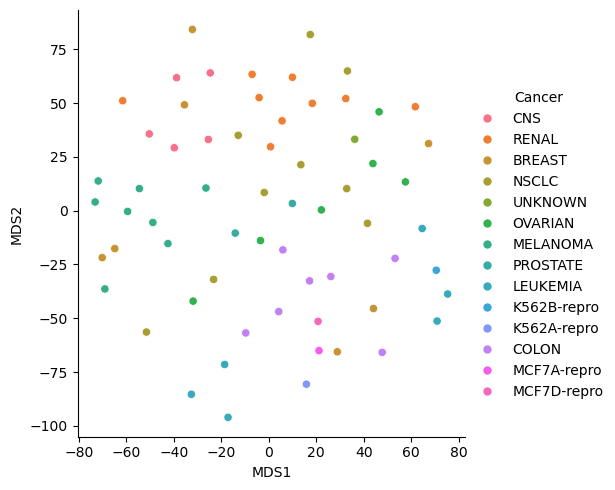
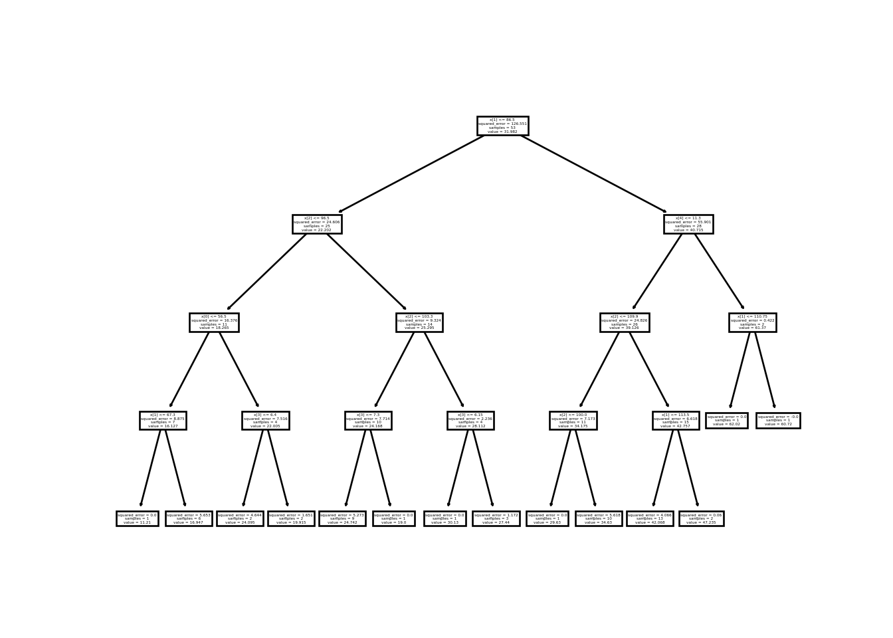
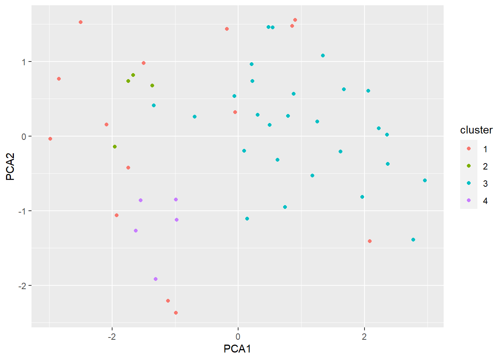

Chapter 4 Clustering
We will now get into clustering. There are two broad areas of clustering: hard and soft. Hard clustering is when an observation can belong to one and only one cluster. Soft clustering is when an observation receives some type of measure (for example, a probability) of being in a cluster. We will be focusing on hard clustering.
Within hard clustering, algorithms can be flat (for example, kmeans) or hierarchical. Finally, within hierarchical, we have agglomeratie and divisive (just like they sound…agglomerative means we will build things up where each observations starts as its own cluster; divisive means we will tear things down which means all observations start in one cluster).
We will start by looking at kmeans, then move into hierarchical clustering.
4.1 Kmeans
We will be using the USArrests data set (this dat is already in R). It is an older data set, but still good to illustrate clustering. This data has 50 observations (one observation per state) and contains statistics in arrests per 100,000 residents for assault, murder and rape. Also provided is the percent of the population in that state who live in urban areas.
## Murder Assault UrbanPop Rape
## Min. : 0.800 Min. : 45.0 Min. :32.00 Min. : 7.30
## 1st Qu.: 4.075 1st Qu.:109.0 1st Qu.:54.50 1st Qu.:15.07
## Median : 7.250 Median :159.0 Median :66.00 Median :20.10
## Mean : 7.788 Mean :170.8 Mean :65.54 Mean :21.23
## 3rd Qu.:11.250 3rd Qu.:249.0 3rd Qu.:77.75 3rd Qu.:26.18
## Max. :17.400 Max. :337.0 Max. :91.00 Max. :46.00


With only 4 variables and good scales, we will just use the scaled data (arrest.scal) for the clustering.
## K-means clustering with 2 clusters of sizes 30, 20
##
## Cluster means:
## Murder Assault UrbanPop Rape
## 1 -0.669956 -0.6758849 -0.1317235 -0.5646433
## 2 1.004934 1.0138274 0.1975853 0.8469650
##
## Clustering vector:
## Alabama Alaska Arizona Arkansas California
## 2 2 2 1 2
## Colorado Connecticut Delaware Florida Georgia
## 2 1 1 2 2
## Hawaii Idaho Illinois Indiana Iowa
## 1 1 2 1 1
## Kansas Kentucky Louisiana Maine Maryland
## 1 1 2 1 2
## Massachusetts Michigan Minnesota Mississippi Missouri
## 1 2 1 2 2
## Montana Nebraska Nevada New Hampshire New Jersey
## 1 1 2 1 1
## New Mexico New York North Carolina North Dakota Ohio
## 2 2 2 1 1
## Oklahoma Oregon Pennsylvania Rhode Island South Carolina
## 1 1 1 1 2
## South Dakota Tennessee Texas Utah Vermont
## 1 2 2 1 1
## Virginia Washington West Virginia Wisconsin Wyoming
## 1 1 1 1 1
##
## Within cluster sum of squares by cluster:
## [1] 56.11445 46.74796
## (between_SS / total_SS = 47.5 %)
##
## Available components:
##
## [1] "cluster" "centers" "totss" "withinss" "tot.withinss"
## [6] "betweenss" "size" "iter" "ifault"We do not know if 2 clusters is the best number of clusters, so we will need to explore other options and determine which is the best number of clusters for this data set.
set.seed(123)
gap_stat = clusGap(arrest.scal, FUN = kmeans, nstart = 25, K.max = 9, B = 50)
fviz_gap_stat(gap_stat)As you can see, different statistics provide different number of clusters (of course!). As a final thought, let’s plot all of these using PCA.
k2 <- kmeans(arrest.scal, centers = 2, nstart = 25)
k3 <- kmeans(arrest.scal, centers = 3, nstart = 25)
k4 <- kmeans(arrest.scal, centers = 4, nstart = 25)
# plots to compare
p2 <- fviz_cluster(k2, geom = "point", data = arrest.scal) + ggtitle("k = 2")
p3 <- fviz_cluster(k3, geom = "point", data = arrest.scal) + ggtitle("k = 3")
p4 <- fviz_cluster(k4, geom = "point", data = arrest.scal) + ggtitle("k = 4")
grid.arrange(p2, p3, p4, nrow = 2)
Going with 2 clusters, we can now try to profile the data. First, we need to merge the data with the cluster numbers.
profile.kmeans=cbind(USArrests,k2$cluster)
all.k=profile.kmeans %>% group_by(k2$cluster) %>%
summarise(mean.assault=mean(Assault),mean.murder=mean(Murder),mean.rape=mean(Rape),mean.pop=mean(UrbanPop))
all.k## # A tibble: 2 × 5
## `k2$cluster` mean.assault mean.murder mean.rape mean.pop
## <int> <dbl> <dbl> <dbl> <dbl>
## 1 1 114. 4.87 15.9 63.6
## 2 2 255. 12.2 29.2 68.4
## *** : The Hubert index is a graphical method of determining the number of clusters.
## In the plot of Hubert index, we seek a significant knee that corresponds to a
## significant increase of the value of the measure i.e the significant peak in Hubert
## index second differences plot.
## 
## *** : The D index is a graphical method of determining the number of clusters.
## In the plot of D index, we seek a significant knee (the significant peak in Dindex
## second differences plot) that corresponds to a significant increase of the value of
## the measure.
##
## *******************************************************************
## * Among all indices:
## * 13 proposed 2 as the best number of clusters
## * 9 proposed 3 as the best number of clusters
## * 2 proposed 4 as the best number of clusters
##
## ***** Conclusion *****
##
## * According to the majority rule, the best number of clusters is 2
##
##
## *******************************************************************## $All.index
## KL CH Hartigan CCC Scott Marriot TrCovW TraceW Friedman
## 2 5.1512 43.4620 15.0387 -0.1410 81.1595 690539.9 716.8223 102.8624 6.8084
## 3 2.4059 35.3076 5.6874 -1.0950 124.5851 651900.1 572.6853 78.3233 9.2063
## 4 0.4884 27.6808 2.5302 -2.6596 152.4673 663556.1 455.6235 69.8686 11.1528
## Rubin Cindex DB Silhouette Duda Pseudot2 Beale Ratkowsky Ball
## 2 1.9055 0.4003 1.0397 0.4085 1.2557 -6.3122 -0.4657 0.4466 51.4312
## 3 2.5024 0.3595 1.1283 0.3094 0.7004 6.8425 0.9679 0.4417 26.1078
## 4 2.8053 0.3525 1.1774 0.2590 1.2645 -3.5562 -0.4629 0.3978 17.4671
## Ptbiserial Frey McClain Dunn Hubert SDindex Dindex SDbw
## 2 0.6323 1.7441 0.5470 0.2214 0.0085 1.6841 1.3346 1.1098
## 3 0.5414 3.4826 1.1571 0.1194 0.0092 1.8410 1.1499 1.4195
## 4 0.4796 -1.9450 1.6045 0.1235 0.0095 2.1248 1.0671 0.5076
##
## $All.CriticalValues
## CritValue_Duda CritValue_PseudoT2 Fvalue_Beale
## 2 0.3890 48.6824 1.0000
## 3 0.3508 29.6102 0.4318
## 4 0.2805 43.6156 1.0000
##
## $Best.nc
## KL CH Hartigan CCC Scott Marriot TrCovW TraceW
## Number_clusters 2.0000 2.000 3.0000 2.000 3.0000 3.00 3.000 3.0000
## Value_Index 5.1512 43.462 9.3513 -0.141 43.4256 50295.68 144.137 16.0844
## Friedman Rubin Cindex DB Silhouette Duda PseudoT2
## Number_clusters 3.0000 3.0000 4.0000 2.0000 2.0000 2.0000 2.0000
## Value_Index 2.3979 -0.2942 0.3525 1.0397 0.4085 1.2557 -6.3122
## Beale Ratkowsky Ball PtBiserial Frey McClain Dunn
## Number_clusters 2.0000 2.0000 3.0000 2.0000 3.0000 2.000 2.0000
## Value_Index -0.4657 0.4466 25.3234 0.6323 3.4826 0.547 0.2214
## Hubert SDindex Dindex SDbw
## Number_clusters 0 2.0000 0 4.0000
## Value_Index 0 1.6841 0 0.5076
##
## $Best.partition
## Alabama Alaska Arizona Arkansas California
## 1 1 1 2 1
## Colorado Connecticut Delaware Florida Georgia
## 1 2 2 1 1
## Hawaii Idaho Illinois Indiana Iowa
## 2 2 1 2 2
## Kansas Kentucky Louisiana Maine Maryland
## 2 2 1 2 1
## Massachusetts Michigan Minnesota Mississippi Missouri
## 2 1 2 1 1
## Montana Nebraska Nevada New Hampshire New Jersey
## 2 2 1 2 2
## New Mexico New York North Carolina North Dakota Ohio
## 1 1 1 2 2
## Oklahoma Oregon Pennsylvania Rhode Island South Carolina
## 2 2 2 2 1
## South Dakota Tennessee Texas Utah Vermont
## 2 1 1 2 2
## Virginia Washington West Virginia Wisconsin Wyoming
## 2 2 2 2 24.1.1 K-Means in Python
from sklearn.preprocessing import StandardScaler
from sklearn.cluster import KMeans
from sklearn.metrics import silhouette_score
from scipy.spatial.distance import cdist
import numpy as np
import matplotlib.pyplot as plt
arrest_py=r.USArrests
scaler = StandardScaler()
arrest_scal = scaler.fit_transform(arrest_py)## C:\PROGRA~3\ANACON~1\lib\site-packages\sklearn\utils\validation.py:623: FutureWarning: is_sparse is deprecated and will be removed in a future version. Check `isinstance(dtype, pd.SparseDtype)` instead.
## if not hasattr(array, "sparse") and array.dtypes.apply(is_sparse).any():
## C:\PROGRA~3\ANACON~1\lib\site-packages\sklearn\utils\validation.py:623: FutureWarning: is_sparse is deprecated and will be removed in a future version. Check `isinstance(dtype, pd.SparseDtype)` instead.
## if not hasattr(array, "sparse") and array.dtypes.apply(is_sparse).any():## array([1, 1, 1, 0, 1, 1, 0, 0, 1, 1, 0, 0, 1, 0, 0, 0, 0, 1, 0, 1, 0, 1,
## 0, 1, 1, 0, 0, 1, 0, 0, 1, 1, 1, 0, 0, 0, 0, 0, 0, 1, 0, 1, 1, 0,
## 0, 0, 0, 0, 0, 0])
inertias = []
silhouette_coefficients = []
K=range(2,10)
for k in K:
kmean1 = KMeans(n_clusters=k).fit(arrest_scal)
kmean1.fit(arrest_scal)
inertias.append(kmean1.inertia_)
score = silhouette_score(arrest_scal, kmean1.labels_)
silhouette_coefficients.append(score)## KMeans(n_clusters=2)
## KMeans(n_clusters=3)
## KMeans(n_clusters=4)
## KMeans(n_clusters=5)
## KMeans(n_clusters=6)
## KMeans(n_clusters=7)
## KMeans()
## KMeans(n_clusters=9)plt.plot(K, inertias, 'bx-')
plt.xlabel('Values of K')
plt.ylabel('Inertia')
plt.title('The Elbow Method using Inertia')
plt.show()
plt.plot(K, silhouette_coefficients, 'bx-')
plt.xlabel('Values of K')
plt.ylabel('Silhouette Coefficient')
plt.title('The Silhouette Method')
plt.show()

4.2 Hierarchical Clustering
In hierarchical clustering, we need to specify the distance metric we wish to use, as well as the linkage information. There are MANY different distance measures, but the two most common are Euclidean and manhattan. We will use the algorithms in the cluster package in R (provides most flexibility in algorithms). In order to do the basic hierarchical clustering, the algorithm is called agnes (Agglomerative “Nested” Hierarchical Clustering). The code below shows how to do this with complete linkage and using Euclidean distances.
dist.assault=dist(arrest.scal,method = "euclidean")
h1.comp.eucl=agnes(dist.assault,method="complete")
pltree(h1.comp.eucl, cex = 0.6, hang = -1, main = "Dendrogram of agnes")
If you want to try a number of different linkage possibilities:
m <- c( "average", "single", "complete", "ward")
names(m) <- c( "average", "single", "complete", "ward")
# function to compute coefficient
ac <- function(x) {
agnes(dist.assault, method = x)$ac
}
map_dbl(m, ac)## average single complete ward
## 0.7379371 0.6276128 0.8531583 0.9346210In order to get cluster identification, you will need to tell R where you want to cut your dendrogram.
You can also compare different dendrograms….

You can also use the measures from the NbClust algorithm here, too….

## *** : The Hubert index is a graphical method of determining the number of clusters.
## In the plot of Hubert index, we seek a significant knee that corresponds to a
## significant increase of the value of the measure i.e the significant peak in Hubert
## index second differences plot.
## 
## *** : The D index is a graphical method of determining the number of clusters.
## In the plot of D index, we seek a significant knee (the significant peak in Dindex
## second differences plot) that corresponds to a significant increase of the value of
## the measure.
##
## *******************************************************************
## * Among all indices:
## * 9 proposed 2 as the best number of clusters
## * 9 proposed 3 as the best number of clusters
## * 5 proposed 4 as the best number of clusters
##
## ***** Conclusion *****
##
## * According to the majority rule, the best number of clusters is 2
##
##
## *******************************************************************## $All.index
## KL CH Hartigan CCC Scott Marriot TrCovW TraceW
## 2 26.3587 41.8949 11.5200 -0.3483 78.6988 725375.1 708.1600 104.6556
## 3 0.0704 31.0737 18.9426 -2.0049 107.4372 918599.5 331.2367 84.3997
## 4 393.5832 34.6264 5.4577 -0.7050 156.0842 617250.0 257.9307 60.1552
## Friedman Rubin Cindex DB Silhouette Duda Pseudot2 Beale Ratkowsky
## 2 6.7099 1.8728 0.4031 1.0513 0.4048 0.5525 13.7698 1.8468 0.4404
## 3 8.1357 2.3223 0.3800 1.0433 0.3692 0.5918 20.0040 1.6098 0.4305
## 4 10.8610 3.2582 0.4334 1.0811 0.3160 1.0527 -0.3001 -0.1035 0.4155
## Ball Ptbiserial Frey McClain Dunn Hubert SDindex Dindex SDbw
## 2 52.3278 0.6330 0.9663 0.5287 0.2637 0.0087 1.3745 1.3451 1.1226
## 3 28.1332 0.6315 0.8670 0.6873 0.2648 0.0092 1.2895 1.2025 0.7789
## 4 15.0388 0.5820 0.0448 1.3366 0.1622 0.0108 1.4085 1.0199 0.5029
##
## $All.CriticalValues
## CritValue_Duda CritValue_PseudoT2 Fvalue_Beale
## 2 0.3773 28.0561 0.1300
## 3 0.4780 31.6758 0.1765
## 4 0.1265 41.4361 1.0000
##
## $Best.nc
## KL CH Hartigan CCC Scott Marriot TrCovW
## Number_clusters 4.0000 2.0000 4.0000 2.0000 4.000 3 3.0000
## Value_Index 393.5832 41.8949 13.4849 -0.3483 48.647 -494574 376.9233
## TraceW Friedman Rubin Cindex DB Silhouette Duda
## Number_clusters 3.0000 4.0000 3.0000 3.00 3.0000 2.0000 2.0000
## Value_Index -3.9886 2.7253 0.4865 0.38 1.0433 0.4048 0.5525
## PseudoT2 Beale Ratkowsky Ball PtBiserial Frey McClain
## Number_clusters 2.0000 2.0000 2.0000 3.0000 2.000 1 2.0000
## Value_Index 13.7698 1.8468 0.4404 24.1946 0.633 NA 0.5287
## Dunn Hubert SDindex Dindex SDbw
## Number_clusters 3.0000 0 3.0000 0 4.0000
## Value_Index 0.2648 0 1.2895 0 0.5029
##
## $Best.partition
## Alabama Alaska Arizona Arkansas California
## 1 1 1 2 1
## Colorado Connecticut Delaware Florida Georgia
## 1 2 2 1 1
## Hawaii Idaho Illinois Indiana Iowa
## 2 2 1 2 2
## Kansas Kentucky Louisiana Maine Maryland
## 2 2 1 2 1
## Massachusetts Michigan Minnesota Mississippi Missouri
## 2 1 2 1 2
## Montana Nebraska Nevada New Hampshire New Jersey
## 2 2 1 2 2
## New Mexico New York North Carolina North Dakota Ohio
## 1 1 1 2 2
## Oklahoma Oregon Pennsylvania Rhode Island South Carolina
## 2 2 2 2 1
## South Dakota Tennessee Texas Utah Vermont
## 2 1 1 2 2
## Virginia Washington West Virginia Wisconsin Wyoming
## 2 2 2 2 24.2.1 Python for Hierarchical Clustering
To view the dendogram in python, you can use the linkage command (caution!!! If you have a lot of data points, this is going to get really messy….in other words, I would not recommend it). This data set only has 50 observations, so it is not too bad to view. The method is the type of linkage and metric is the distance metric used.
from scipy.cluster.hierarchy import dendrogram, linkage
linkage_data = linkage(arrest_scal, method='ward', metric='euclidean')
dendrogram(linkage_data)## {'icoord': [[5.0, 5.0, 15.0, 15.0], [25.0, 25.0, 35.0, 35.0], [10.0, 10.0, 30.0, 30.0], [55.0, 55.0, 65.0, 65.0], [45.0, 45.0, 60.0, 60.0], [20.0, 20.0, 52.5, 52.5], [85.0, 85.0, 95.0, 95.0], [75.0, 75.0, 90.0, 90.0], [135.0, 135.0, 145.0, 145.0], [125.0, 125.0, 140.0, 140.0], [115.0, 115.0, 132.5, 132.5], [105.0, 105.0, 123.75, 123.75], [82.5, 82.5, 114.375, 114.375], [175.0, 175.0, 185.0, 185.0], [165.0, 165.0, 180.0, 180.0], [155.0, 155.0, 172.5, 172.5], [98.4375, 98.4375, 163.75, 163.75], [36.25, 36.25, 131.09375, 131.09375], [195.0, 195.0, 205.0, 205.0], [215.0, 215.0, 225.0, 225.0], [200.0, 200.0, 220.0, 220.0], [245.0, 245.0, 255.0, 255.0], [235.0, 235.0, 250.0, 250.0], [265.0, 265.0, 275.0, 275.0], [295.0, 295.0, 305.0, 305.0], [285.0, 285.0, 300.0, 300.0], [270.0, 270.0, 292.5, 292.5], [242.5, 242.5, 281.25, 281.25], [210.0, 210.0, 261.875, 261.875], [315.0, 315.0, 325.0, 325.0], [335.0, 335.0, 345.0, 345.0], [320.0, 320.0, 340.0, 340.0], [365.0, 365.0, 375.0, 375.0], [385.0, 385.0, 395.0, 395.0], [370.0, 370.0, 390.0, 390.0], [355.0, 355.0, 380.0, 380.0], [415.0, 415.0, 425.0, 425.0], [405.0, 405.0, 420.0, 420.0], [445.0, 445.0, 455.0, 455.0], [435.0, 435.0, 450.0, 450.0], [465.0, 465.0, 475.0, 475.0], [442.5, 442.5, 470.0, 470.0], [485.0, 485.0, 495.0, 495.0], [456.25, 456.25, 490.0, 490.0], [412.5, 412.5, 473.125, 473.125], [367.5, 367.5, 442.8125, 442.8125], [330.0, 330.0, 405.15625, 405.15625], [235.9375, 235.9375, 367.578125, 367.578125], [83.671875, 83.671875, 301.7578125, 301.7578125]], 'dcoord': [[0.0, 0.7800624726117171, 0.7800624726117171, 0.0], [0.0, 1.0225018692038894, 1.0225018692038894, 0.0], [0.7800624726117171, 1.1021694044411907, 1.1021694044411907, 1.0225018692038894], [0.0, 0.7945530103578827, 0.7945530103578827, 0.0], [0.0, 1.2197191288489164, 1.2197191288489164, 0.7945530103578827], [1.1021694044411907, 2.7421139544450304, 2.7421139544450304, 1.2197191288489164], [0.0, 0.3537743681310408, 0.3537743681310408, 0.0], [0.0, 0.952332839989021, 0.952332839989021, 0.3537743681310408], [0.0, 0.5408248189680332, 0.5408248189680332, 0.0], [0.0, 0.9610307025238368, 0.9610307025238368, 0.5408248189680332], [0.0, 1.3122402649731468, 1.3122402649731468, 0.9610307025238368], [0.0, 1.7079251328916916, 1.7079251328916916, 1.3122402649731468], [0.952332839989021, 2.2649420381778995, 2.2649420381778995, 1.7079251328916916], [0.0, 1.2089769072372043, 1.2089769072372043, 0.0], [0.0, 1.404214498699647, 1.404214498699647, 1.2089769072372043], [0.0, 3.055735303919404, 3.055735303919404, 1.404214498699647], [2.2649420381778995, 3.531541898650026, 3.531541898650026, 3.055735303919404], [2.7421139544450304, 6.527470828535695, 6.527470828535695, 3.531541898650026], [0.0, 0.7180984285039761, 0.7180984285039761, 0.0], [0.0, 0.9924604112760993, 0.9924604112760993, 0.0], [0.7180984285039761, 1.3303363086847781, 1.3303363086847781, 0.9924604112760993], [0.0, 0.7464962542035871, 0.7464962542035871, 0.0], [0.0, 0.815842993431543, 0.815842993431543, 0.7464962542035871], [0.0, 0.4990993894073977, 0.4990993894073977, 0.0], [0.0, 0.2079437976133826, 0.2079437976133826, 0.0], [0.0, 0.6625852157172658, 0.6625852157172658, 0.2079437976133826], [0.4990993894073977, 1.3585660787207545, 1.3585660787207545, 0.6625852157172658], [0.815842993431543, 1.7661673389439376, 1.7661673389439376, 1.3585660787207545], [1.3303363086847781, 3.023678727416965, 3.023678727416965, 1.7661673389439376], [0.0, 0.7109765828248565, 0.7109765828248565, 0.0], [0.0, 1.0705701702968808, 1.0705701702968808, 0.0], [0.7109765828248565, 1.1724104281482475, 1.1724104281482475, 1.0705701702968808], [0.0, 0.8058634904273213, 0.8058634904273213, 0.0], [0.0, 1.0865316609298954, 1.0865316609298954, 0.0], [0.8058634904273213, 1.55526892227882, 1.55526892227882, 1.0865316609298954], [0.0, 1.8302005688424474, 1.8302005688424474, 1.55526892227882], [0.0, 0.59956022650398, 0.59956022650398, 0.0], [0.0, 1.2729224911920178, 1.2729224911920178, 0.59956022650398], [0.0, 0.43312429085085896, 0.43312429085085896, 0.0], [0.0, 0.5591483670409593, 0.5591483670409593, 0.43312429085085896], [0.0, 0.7860298248284557, 0.7860298248284557, 0.0], [0.5591483670409593, 0.8558054806051812, 0.8558054806051812, 0.7860298248284557], [0.0, 1.0818450636699195, 1.0818450636699195, 0.0], [0.8558054806051812, 1.95573383070349, 1.95573383070349, 1.0818450636699195], [1.2729224911920178, 2.225708599114937, 2.225708599114937, 1.95573383070349], [1.8302005688424474, 3.2433103740861906, 3.2433103740861906, 2.225708599114937], [1.1724104281482475, 3.772026252105819, 3.772026252105819, 3.2433103740861906], [3.023678727416965, 7.261167758993684, 7.261167758993684, 3.772026252105819], [6.527470828535695, 13.653466603337856, 13.653466603337856, 7.261167758993684]], 'ivl': ['0', '17', '9', '41', '32', '23', '39', '42', '12', '31', '8', '2', '21', '19', '30', '1', '5', '4', '27', '40', '47', '33', '44', '11', '25', '26', '22', '48', '18', '14', '28', '45', '49', '3', '16', '7', '20', '29', '6', '38', '24', '36', '46', '35', '13', '15', '34', '37', '10', '43'], 'leaves': [0, 17, 9, 41, 32, 23, 39, 42, 12, 31, 8, 2, 21, 19, 30, 1, 5, 4, 27, 40, 47, 33, 44, 11, 25, 26, 22, 48, 18, 14, 28, 45, 49, 3, 16, 7, 20, 29, 6, 38, 24, 36, 46, 35, 13, 15, 34, 37, 10, 43], 'color_list': ['C1', 'C1', 'C1', 'C1', 'C1', 'C1', 'C1', 'C1', 'C1', 'C1', 'C1', 'C1', 'C1', 'C1', 'C1', 'C1', 'C1', 'C1', 'C2', 'C2', 'C2', 'C2', 'C2', 'C2', 'C2', 'C2', 'C2', 'C2', 'C2', 'C2', 'C2', 'C2', 'C2', 'C2', 'C2', 'C2', 'C2', 'C2', 'C2', 'C2', 'C2', 'C2', 'C2', 'C2', 'C2', 'C2', 'C2', 'C2', 'C0'], 'leaves_color_list': ['C1', 'C1', 'C1', 'C1', 'C1', 'C1', 'C1', 'C1', 'C1', 'C1', 'C1', 'C1', 'C1', 'C1', 'C1', 'C1', 'C1', 'C1', 'C1', 'C2', 'C2', 'C2', 'C2', 'C2', 'C2', 'C2', 'C2', 'C2', 'C2', 'C2', 'C2', 'C2', 'C2', 'C2', 'C2', 'C2', 'C2', 'C2', 'C2', 'C2', 'C2', 'C2', 'C2', 'C2', 'C2', 'C2', 'C2', 'C2', 'C2', 'C2']}
To do Agglomerative Clustering:
Note that you need to specify the number of clusters here. You are able to say None for the number of clusters, but then you need to specify the distance threshold (from dendogram). Again illustrating that this is not the best method for large data sets.
from sklearn.cluster import AgglomerativeClustering
aggclus_py = AgglomerativeClustering(n_clusters = 2, affinity = 'euclidean', linkage = 'complete')
arrest_hy = aggclus_py.fit_predict(arrest_scal)Note: I did not find a good package for divisive clustering in Python.
##DBSCAN
DBSCAN is one of the most popular density-based clustering algorithm in use. Density Based Spatial Clustering Applications with Noise (DBSCAN) cluster points together that are “density reachable” (within a certain radius of each other). Users can specify this distance and the minimum number of points that will be used to create clusters (see https://cran.r-project.org/web/packages/dbscan/vignettes/dbscan.pdf)
scan1<-hdbscan(arrest.scal,minPts=4)
pca_ex=prcomp(arrest.scal,scale=F)
scan1data=cbind.data.frame(pca_ex$x[,1],pca_ex$x[,2],as.factor(scan1$cluster+1))
colnames(scan1data)=c("PCA1","PCA2","cluster")
ggplot(scan1data,aes(x=PCA1,y=PCA2,color=cluster))+geom_point()+ scale_fill_brewer(palette = "Dark2")
#res.dbscan=dbscan(arrest.scal,eps=1.2,minPts=4)
d=dist(arrest.scal,method = "canberra")
res.dbscan=dbscan(d,eps=1.2,minPts=4)
res.dbscan## DBSCAN clustering for 50 objects.
## Parameters: eps = 1.2, minPts = 4
## Using canberra distances and borderpoints = TRUE
## The clustering contains 2 cluster(s) and 27 noise points.
##
## 0 1 2
## 27 10 13
##
## Available fields: cluster, eps, minPts, dist, borderPoints